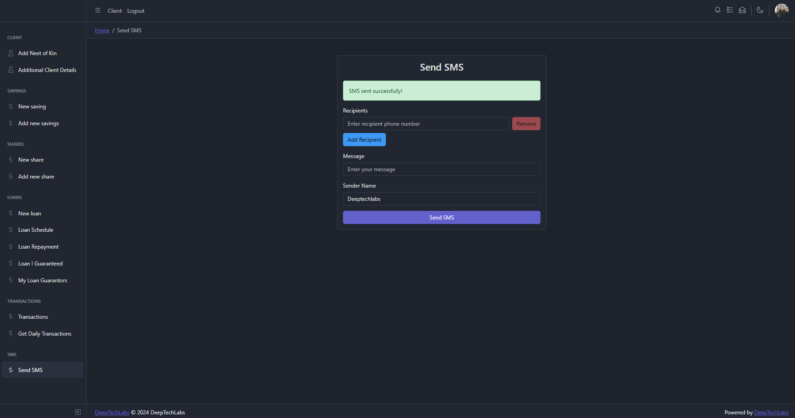
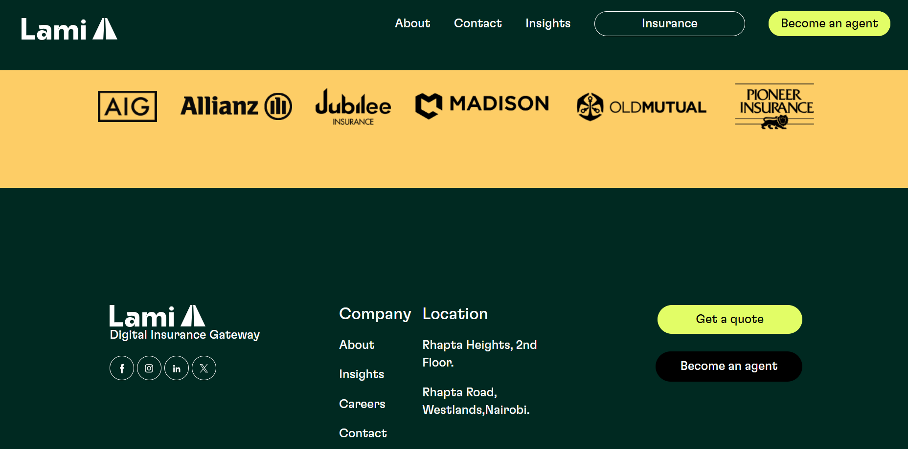
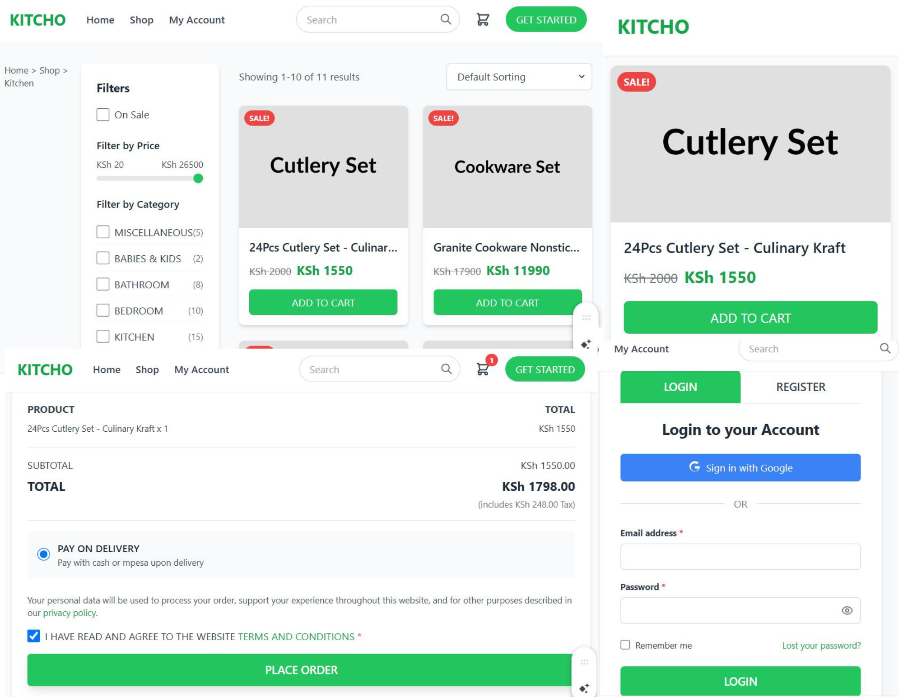
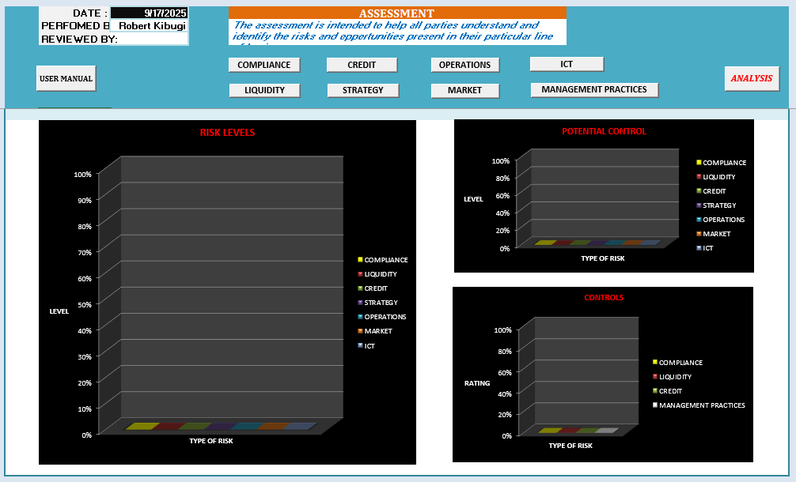

My Projects

Microfinance System
Developed a comprehensive microfinance management system featuring client management, savings, loans, shares, and SMS notification capabilities. The system includes a user-friendly interface for tracking transactions and sending automated SMS updates.
Tech: HTML, CSS, JavaScript, Node.js, PostgreSQL
More Details
Achievements
- Created a robust system to manage client data, savings, loans, and shares efficiently.
- Implemented an SMS notification feature to enhance communication with clients.
- Designed an intuitive interface for seamless transaction tracking.
Links

Lami Gateway
Led the backend team in designing and developing the Lami Core API, Services API, and Dashboards API for a digital insurance gateway. Supported integrations with major clients including KCB, Jumia, Stanbic Bank, and One Acre Fund, ensuring seamless API connectivity. Integrated third-party services like Flutterwave payment gateway and Smile Identity KYC, while maintaining SAAS stability and performance.
Tech: JavaScript/Node.js, TypeScript, Angular, PostgreSQL, AWS
More Details
Achievements
- Led the backend team to successfully design and develop robust APIs for the Lami Gateway.
- Facilitated successful API integrations with clients like KCB, Jumia, Stanbic Bank, and One Acre Fund.
- Ensured optimal stability, reliability, and performance of the SAAS platform.
- Integrated third-party services including Flutterwave and Smile Identity KYC.
- Mentored and managed the backend development team to foster growth and leadership.
Links

Kitcho E-commerce Platform
Designed and developed an e-commerce platform for Kitcho, featuring a user-friendly interface for browsing and purchasing kitchen products. Implemented filters for price and category, a shopping cart, and secure login/register functionality with payment options including cash on delivery and M-Pesa.
Tech: HTML, CSS, JavaScript, Node.js, PostgreSQL
More Details
Achievements
- Created an intuitive e-commerce platform with advanced filtering and sorting options.
- Integrated secure login and registration features with Google authentication.
- Implemented a seamless shopping cart and payment system supporting cash on delivery and M-Pesa.
- Enhanced user experience with real-time product updates and sales promotions.
Links

Enterprise Risk Management Tool
Developed a comprehensive Enterprise Risk Management (ERM) tool using VBA and Python to assist small enterprises with risk assessment and mitigation. The tool includes 3D visualizations for risk levels, potential controls, and management practices across various categories like compliance, liquidity, and ICT.
Tech: VBA, Python, Ms. Excel, Ms. Dynamics
More Details
Achievements
- Created an open-source ERM tool with interactive 3D charts for risk analysis.
- Enhanced decision-making for small enterprises by identifying risks and opportunities.
- Received recognition for innovative risk management solutions in the finance sector.
Links